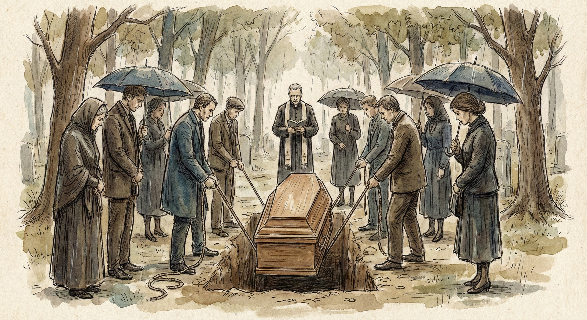
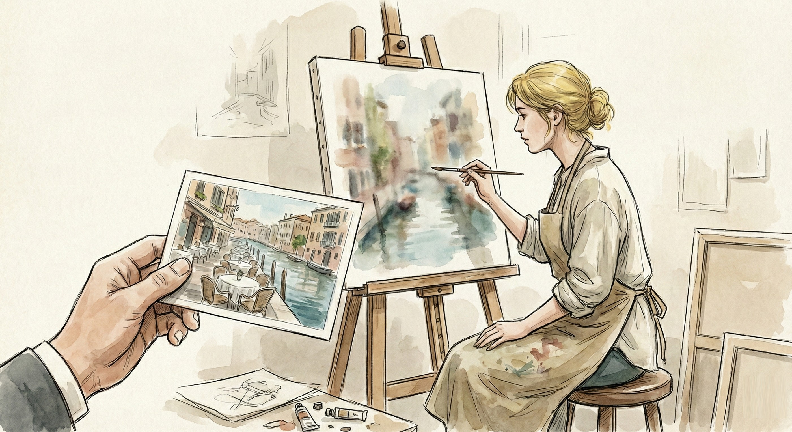

Chapter 8: The Wounds We Inherit
"How Hell Belief Damages Everything"
The effects that the incorrect beliefs mentioned so far can have on the physical, mental, emotional, psychological, and spiritual aspects of our being are massive.
Take the myth about God condemning my alcoholic Aunt Elizabeth to burn in hell forever because she didn't do what she needed to in time. I can't begin to tell you the psychological ramifications of this on our family.
I honestly don't know how my dad coped with her funeral and the many other funerals he had to lead as a preacher where there was no doubt that the person being buried had been evil. He once had to bury a convicted criminal killed in the act of attempting to commit yet another murder.
We didn't discuss this often. But when we did, he would shrug and say matter-of-factly, "There's no point focusing on trying to say something good about the dead person. Everyone in that room knows the kind of life that person led and where he's headed. So I just preach the gospel."
Then he would sit back in silence and deep thought, probably contemplating the expression on the gangster's mom's face at the graveside.
I have a great deal of respect for my dad. I'd hate to have been in his shoes. Believing what he did about the dead person's destiny, he could still look the bereaved family in the eye and encourage them to put their trust in a God who loves unconditionally.
The Weight of Judgment
My dad's pastoral experience reveals the impossible tension that hell doctrine creates for those who must minister in its shadow.
How do you offer comfort when you believe the person you're burying is currently experiencing eternal torment?
How do you speak of God's love when the theology you hold says God has consigned this person to unending flames?
The answer, tragically, is that you develop compartmentalization.
You learn to put the doctrine in a box when conducting funerals, when offering pastoral care, when comforting the grieving.
You learn to preach hope while holding horror.
This isn't hypocrisy. It's psychological survival.
The human heart cannot simultaneously hold compassion for the grieving and belief in eternal torture without creating internal fractures.
Personal Liberation
I can't describe the weight that lifted off my shoulders when I saw, for the first time, how loving, just, merciful, and fair God really is.
I experienced tremendous psychological healing, the disappearance of distressing dreams, and freedom from the guilt of not trying to "snatch people from hell" every moment of the day.
For years, I had carried an invisible burden: the constant pressure to save everyone I encountered.
Every conversation became a potential rescue mission. Every relationship became a covert operation to "get them saved."
But what if they don't respond? What if I fail? What if they die tonight in a car accident and I hadn't shared the gospel clearly enough?
This wasn't love driving me: It was terror.
When you believe that every unsaved person is one heartbeat away from eternal flames, you cannot have genuine relationships.
You can only have projects.
Relationship Transformation
My wife's experience was very similar. So one day, while Jane was browsing through a design magazine in our living room, I decided to interview her for the book.
"When did you realize that something wasn't quite right with your childhood views of God?" I asked, poising my pen above the notepad I'd been carrying around for weeks.
"The thing that immediately clicked for me," she replied, looking up from the magazine, "was that bit in the Bible where Jesus said we must forgive others seventy times seven. If God expects us to repeatedly forgive those who wrong us, why would He adamantly put a lid on how far He's prepared to go with forgiving those who commit the sin of not believing in Him?"
Her insight sounded perfect for the book. So I continued with my questioning. "What would you say has been the biggest change in our lives since we discarded those myths about God?"
She leaned back on the couch, clearly not pressurized a bit by the thought that her words would be captured for posterity. "For me," she said, "what's changed the most is my attitude toward those around me. For the first time I can have a relaxed conversation with a nonbelieving person without the idea at the back of my mind that they're 'bad.' I no longer consider myself spiritually superior. And I don't feel the pressure of trying to steer the conversation to a point where they're praying some formula out loud after me."
"Are you saying you're less judgmental?" I asked.
"Definitely," she said, the morning sun reflecting off her shiny, blonde hair. "And more in love with everyone. I know it sounds sappy, but it's true." She stood. "Want some coffee?"
I nodded, then followed her to the kitchen, leaving my notebook in the other room. As I watched her preparing the coffee, I considered my own response to the question.
"I think it's great that I can live my life doing what comes naturally and have fun without worrying about what's going to happen to some tribe in East Timor that's never heard of the gospel."
While Jane poured water over the grounds in the coffeemaker, I pulled two mugs out of the cabinet. "Yesterday at the office I got one of those chain e-mails. It was the usual emotional appeal for some kid with a terminal disease who would somehow benefit financially if the e-mail were sent to as many people as possible."
My wife shook her head.
"At the bottom of the e-mail was a warning that bad things would happen to me if I didn't send it to at least three other people. But good stuff would happen if I sent it on. And the more people I forwarded it to, the more good stuff would happen in my life."
Freedom from Coercion
Jane chuckled as she poured steaming coffee into our mugs.
I took the cup she offered me, and we moved back into the living room. "Just as I was about to hit the Delete key, it struck me that for most of my life I've acted just like those people who pass those e-mails on. Except that mine was called the gospel, and the terminal kid was the human race."
"I really thought that if I passed the gospel on to as many people as possible, I would be helping the human race, and in the end, I would win big. If I did nothing about the gospel, I'd better steer clear of sharp objects or winding roads near cliffs."
"I like that analogy," Jane said, sipping her hot coffee.
"That e-mail also got me to thinking about how much our church activities had been based on myths about God." I blew over my steaming beverage. "I also started wondering how many times I've suppressed all those thoughts that didn't make sense. They would have depressed me if I'd examined them any closer."
"I agree," she said. "I suspect that much of the alcoholism, depression, and mental problems in the world are directly due to the weird stuff preached about God. It's no wonder so many people don't want to know the Father of Jesus. They've been confusing him with Yahweh this whole time! Yahweh and Paul probably enjoy more airtime from pulpits than the words Jesus spoke, I would suggest."

"I think you've hit the nail on the head," I said, grabbing my notepad. "I'm going to mention that in the book too."
The chain email analogy reveals something profound: when you believe people are in eternal danger, every interaction becomes manipulative.
You're not having conversations: you're running rescue operations.
You're not building relationships: you're gathering souls.
This creates a fundamental distortion in how you see other human beings.
The Hidden Damage
"I suspect that much of the alcoholism, depression, and mental problems in the world are directly due to the weird stuff preached about God. Sorry I think I might have said that already."
Jane's observation points to something crucial that we often miss: hell belief doesn't just affect theology. It affects mental health.
The constant fear that your loved ones might be eternally lost creates chronic anxiety.
The guilt over "failing" to convert everyone you meet generates depression.
The internal conflict between love and judgment produces emotional exhaustion.
And the compartmentalization required to function while holding such beliefs creates dissociation and trauma.
No wonder many people reject Christianity entirely. They're not rejecting Jesus; they're rejecting the psychological prison that hell doctrine creates. They're rejecting Yahweh and his obsession with blood, with killing, with genocide and with anything that sounds like legalese.
What Healing Looks Like
Apparently considering the interview over, my wife crossed the room and sat at her easel. She picked up a thin brush and peered at the canvas she'd been working on for the past several weeks.
"What are you painting?" I asked.
"A restaurant scene in Venice." She handed me a five-by-seven-inch photograph. "Here's the original picture. What do you think?"
I looked from the photo to her work of art. "I like the pastels you're using," I said. "I think that purple color in the photograph is too dark for Venice. Your brighter view of it is so much more appealing." I recalled our last trip to Italy. "And your painting looks more like what the city is really like."
The people seated around the tables in the Venice restaurant scene on my wife's canvas all looked happy and content.
I couldn't help but conclude that they'd probably not been exposed to the myths I was brought up to believe.
The ability to see people as people—not as potential converts or lost souls.
The freedom to enjoy conversations without hidden agendas.
The peace of knowing that love, not fear, guides your interactions with others.
The joy of painting a scene where everyone looks happy and content ... because maybe they are.
When you're no longer carrying the invisible burden of eternal rescue missions, you can finally see the world as it truly is.
Beautiful. Hopeful. Full of grace.
Summary
The wounds we inherit from hell belief are real, deep, and far-reaching.
They affect how we see ourselves, how we relate to others, and how we understand God's character.
But healing is possible.
When the fear of eternal torture is removed, we discover what we were meant to be all along: people capable of genuine love, authentic relationships, and joyful living.
The psychological liberation described in this chapter isn't just a side benefit of correct theology: it's evidence that we're finally seeing truth.
When your beliefs align with reality, your heart stops fighting itself.